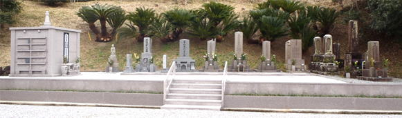
合葬墓とは
近年、各地区に古くからある墓地に核家族化や少子化などの諸事情に
より無縁になったお墓が発生しております。その仏様をお祀りするための
お墓のことです。
仮に私達のお墓が遠い将来、無縁墓になったとしても こうして
地域全体でお祀りするこ事が出来れば安心できるのではないでしょうか。
寺院の合葬墓（ 納骨堂 ）
お寺の納骨堂を建立しました。お骨壷が180個、収納できます。
納骨堂を建立するにあたり、墓地内のお墓の並べ替え工事や
中央入り口の階段や花壇など周辺をリフォームする事により、以前に
比べ全体が大変明るくなりました。
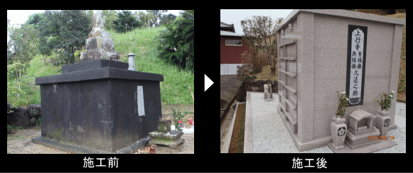
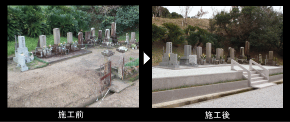
施工手順
| 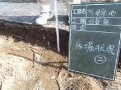 |
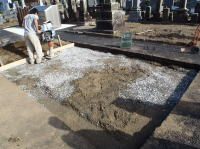 |
ベースコンクリートを15ｃｍ厚に打設するために床堀を20センチ以上、切土、クラッシャーを敷き込みランマにて念入りに地固めしました。 |
| 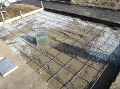 |
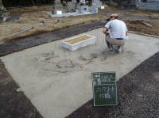 |
お骨を土に返す部分を除いて鉄筋を配筋し生コンを打設します。 |
| 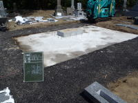 |
コンクリートを十分に乾燥させ基礎の完成です |
| 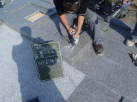 |
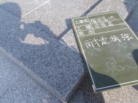 |
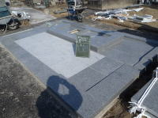 |
| 基礎石をコンクリートで設置します。石材の合わせ面には、耐震用の接着剤を使用し、更に見えなくなる要所に切り込みを入れステンレス補強材を落とし込みます。 |
| 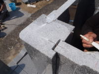 |
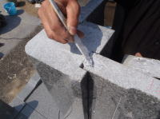 |
柱等には、凹凸加工を施し、更にステンレス補強材を落とし込みます |
| 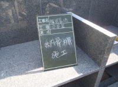 |
納骨用の棚を石材用の耐震ボンドにて設置します。 |
| 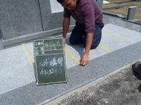 |
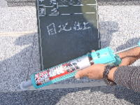 |
表面の仕上げ目地にも耐震ボンドを使用します。 |
| 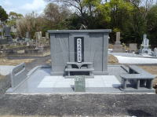 |
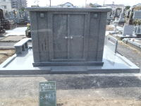 |
完成。 |

|